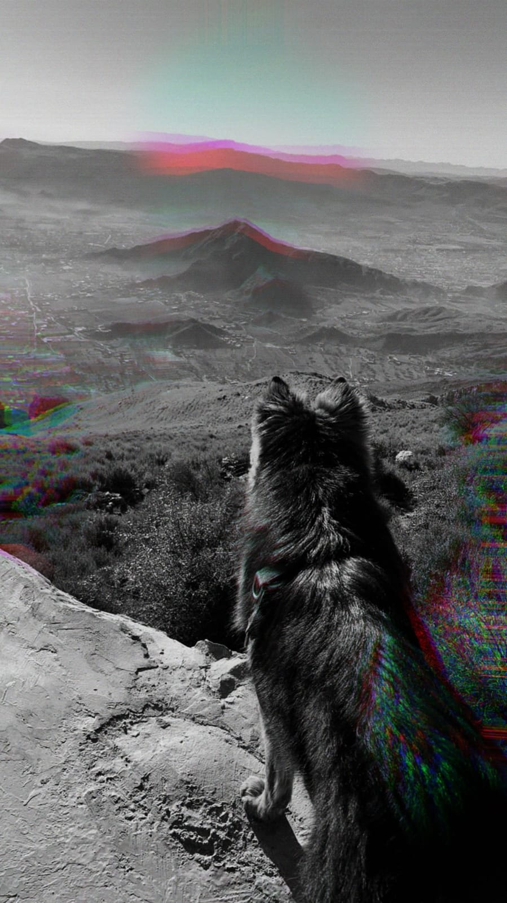

Murree, nestled in the heart of Pakistan, is a destination that truly has it all. From majestic mountains to serene valleys, this picturesque landscape is a haven for nature lovers and adventure enthusiasts alike. Immerse yourself in the breathtaking vistas, where every turn reveals a new panorama that will leave you in awe.
Beyond the natural splendor, Murree boasts a rich cultural heritage that is waiting to be discovered. Delve into the local traditions, explore the historical landmarks, and engage with the warm-hearted locals who will share their stories and traditions with open arms.
For those seeking thrills and outdoor adventures, Murree offers a plethora of exciting activities. Trek through scenic trails, embark on exhilarating hikes, or indulge in adrenaline-pumping mountain biking. The possibilities are endless, and the memories created will last a lifetime.
After a day of exploration, unwind in the charming cafes, savoring the local cuisine and immersing yourself in the vibrant atmosphere. Or perhaps treat yourself to a leisurely stroll through the bustling markets, where you can find unique handicrafts and souvenirs to commemorate your visit.
Whether you're a nature enthusiast, a history buff, or simply seeking a serene getaway, Murree promises an experience like no other. Allow us to be your guide as we showcase the hidden gems and must-visit attractions that will make your journey to Murree truly unforgettable.
Join us on this virtual exploration, and let the beauty of Murree ignite your imagination and inspire your next travel adventure.